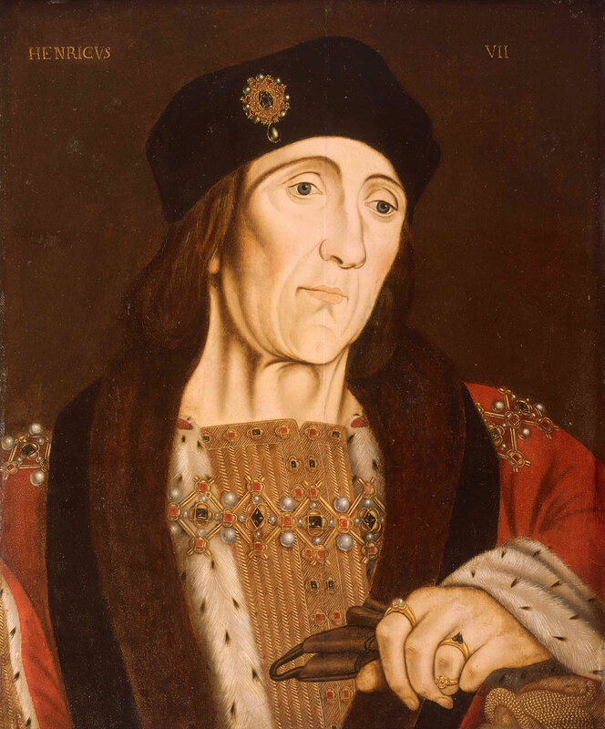
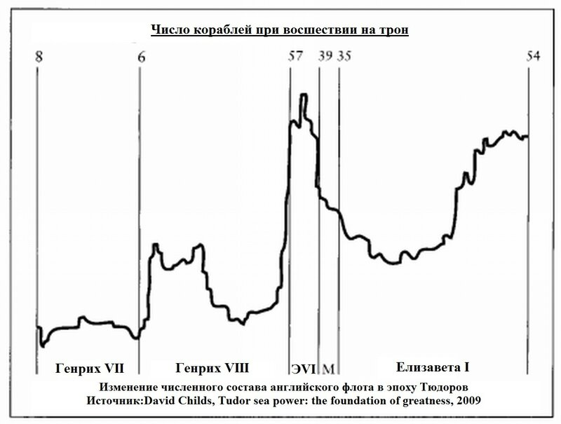
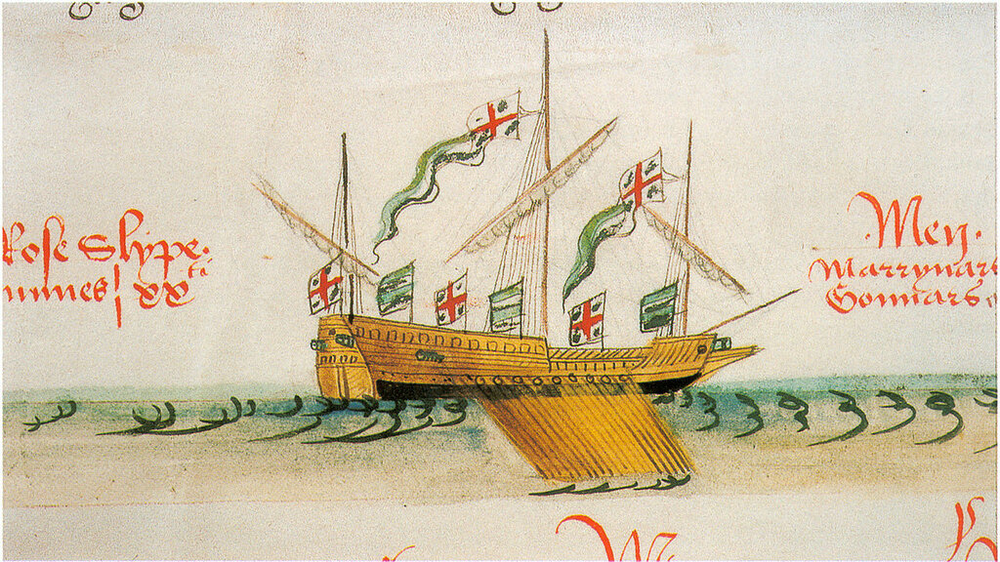
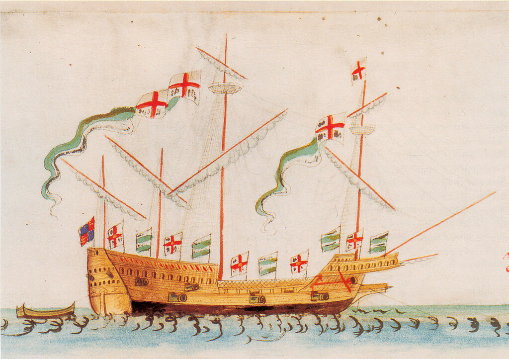
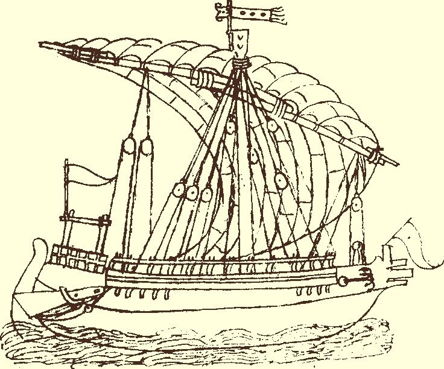

Первые галеры и галеасы: истоки
То было в дни, когда над морем
Господствовал французский флот
М. А. Волошин.
Возникновение военно-морского флота Англии в современном понимании этого слова относят обычно к периоду правления трех монархов из династии Тюдоров: Генриха VII (1485—1509), его сына Генриха VIII (1509 —1547) и внучки Елизаветы I (1558 — 1603). Причем, при Генрихе VII были созданы лишь предпосылки для возникновения военного флота, при Генрихе VIII – накоплены силы и организовано флотское управление, и только при Елизавете началось эффективное использование возможностей военного флота.

Король Англии Генрих VII. Портрет работы художника английской школы (1505) .

Генрих VII построил только два крупных корабля – Regent (1000 тонн) и Sovereign (800 тонн), оба вошли в строй в 1488 году. Но вместе с полученными в наследство Grace Dieu, Mary of the Tower, Governor, Martin Garsya, Fawcon и Trinity, а также с захваченной в бою у шотландцев в 1490 году Margaret король сформировал довольно внушительный флот. При Генрихе VII было спущено на воду также до полудюжины более мелких судов, из которых, естественно, наше внимание привлекут вошедшие в строй в 1497 году «галеры» Sweepstake и Mary Fortune (кстати, Sweepstake были первым кораблем, построенным на новой верфи в Портсмуте). Они больше напоминали гребные баржи (rowbarges), которые также в то время имелись в составе анлийского флота.

Rowbarge Rose Slip. (1546) Anthony Roll, флот Генриха VIII.
На этом изображении судна Roseslip (или Rose Slyp) художник, видимо, ошибся подписью. Гребная баржа Roseslip , одна из 14 построенных в 1546 году судов этого типа, имела водоизмещение всего 20 тонн и использовалась в основном в качестве тендера, вспомогательного рейдового судна. Здесь же, скорее всего изображен 160-тонник Tiger, который был построен в это же время.
По дошедшим до нас сведениям, «галеры» Sweepstake и Mary Fortune имели по три мачты каждая, причем на грот-мачте уже имелась и стеньга. Вместе с этим, они были оснащены веслами – 60 и 80 весел соответственно. Именно по этой причине англичане называли эти корабли galliasses (галеасы). Историки последующих времен не всегда глубоко исследуют эту тему, полагая, что это были «типичные» галеры, подобные их средиземноморским сестрам. На самом деле они представляли класс парусных кораблей, несколько меньших по размерам в сравнении с типичными парусниками той эпохи. Более тонкие обводы давали возможность использовать на них в качестве вспомогательного движителя весла и достигать бóльших скоростей при слабом ветре по сравнению с их чисто парусными коллегами. Естественно, они несли флаги любимых Тюдорами цветов – белого и зеленого – и флаги с крестами св. Георгия.
Может быть будет интересным отметить, что сами англичане для своих гребных кораблей в те годы не использовали термин galley «галера», применяя его почти исключительно к галерам своих заклятых друзей французов. Посмотрим, например, переписку лорда адмирала Джона Дадли с Генрихом VIII. Приводя список кораблей своего флота в 1545 году, адмирал делит их на три класса: (1) корабли (shippes), (2) галеасы и шлюпы с веслами (Galliasses and Shaluppes with Ores), и (3) рыбацкие суда из гавани Rye (Boates of Rye). Очевидно, что тот класс английских кораблей, которые мы по традиции называем галерами, сами англичане обозначали как весельные шлюпы.
Об английских галеасах следует сказать особо. Вторая из двух построенных в 1497 году «галер» Mary Fortune прошла модернизацию в 1512 году и получила название галеас Swallow.

Галеас Swallow. Anthony Roll of Henry VIII's Navy(1546)
Мы знаем, что галеасы получили широкую известность после сражения при Лепанто (1571), когда многие морские державы стали оснащать свои флоты этими мощными кораблями. Но сейчас мы говорим о середине шестнадцатого века, когда до Лепанто оставалось еще около тридцати лет. Так откуда же в английском флоте появилось большое число кораблей этого типа (только в списке Anthony Roll их 14 вымпелов)?
Вообще-то термин галеас был известен давно, О.Жаль приводит его упоминание в манускрипте 1385 года на латинском языке («…in quadam Galeassa nominata Sancta Maria»). Означал он просто большую галеру. В наших предыдущих заметках мы писали, что фундаментом для развития нового класса гребных кораблей – галеасов – стали купеческие галеры. Именно венецианские купеческие галеры послужили образцом и для создания английских галеасов.

Галера Фландрия
Торговля между Англией и Венецией началась в середине XIII века. А в 1317 году в Светлейшей был создан специальный флот, составленный из Фламандскизх галер, первый в истории торговый флот, организованный государством, который выдержал испытание временем. Причем, испытание было не из легких: пришлось выдержать жесткую конкуренцию со стороны сухопутных торговых маршрутов. Кардинал Гильом Филластр писал в 1417 году: венецианцы затрачивают почти год, чтобы доставить груз до Фландрии морем, в то время как сухопутный маршрут до Брюгге занимает не более двадцати четырех дней. Фактором, способствующим выбору морского маршрута служила большая его безопасность, так как в то время на традиционном направлении Марсель-Лион и далее на север, через Шампань и Бургундию, бушевали бесконечные войны. Морское путешествие тоже не было легкой прогулкой, но новые фландрские галеры позволяли не только бороться с непогодой в Бискайском заливе и Ла-Манше, но и, благодаря удачной конструкции новых купеческих галер и их достаточному вооружению, успешно противостоять многочисленным атакам пиратов. А если вспомнить «Кентерберийские рассказы» Джеффри Чосера, то капитаны этих купеческих галер еще ухитрялись захватывать корабли пиратов, прибирать к рукам их добычу, а самих разбойников «спроваживать по доске» в гости к Нептуну. Патрон галеры, которого Чосер называет Shipman
… с совестью своею был сговорчив
И, праведника из себя не корча,
Всех пленников, едва кончался бой,
Вмиг по доске спроваживал домой
Джеффри Чосер «Кентерберийские рассказы» (пер. И. Кашкина)
Впрочем, венецианские моряки не щадили не только морских пиратов, но и жителей прибрежных поселений, которые посягали на их жизнь и имущество. Так, в начале 1323 года в английском Саутхэмптоне «патроны, купцы, шкиперы и моряки» пяти венецианских галер устроили мордобой жителям порта, закончившийся смертью нескольких англичан и разгромом принадлежащего им имущества. Причина банальна – месть за убитого в порту венецианского матроса. Дело поднялось до самых высших кругов обеих держав и закончилось письмом короля Англии, «скрепленным королевской печатью на зеленом воске», к дожу Венеции с требованием публичных извинений. Впрочем, в результате посредничества флорентийских банков Bardi и Peruzzi, извинения принес английский король.
Подобные происшествия осложняли торговлю Венеции с Англией, но не могли ее остановить. А высокие качества больших венецианских купеческих галер будили у англичан желание создать собственную эскадру подобных «галеасов». Генрих VIII первоначально надеялся на помощь испанского короля в строительстве или, на худой конец, продаже англичанам таких гребных кораблей, но в то время все ресурсы Карла V были направлены на борьбу с турками и просьба английского монарха осталась без ответа. Англии оставалось только положиться на собственные силы и умение своих корабельных мастеров, чтобы создать свой собственный гребной флот.
Продолжим тему в следующий раз.